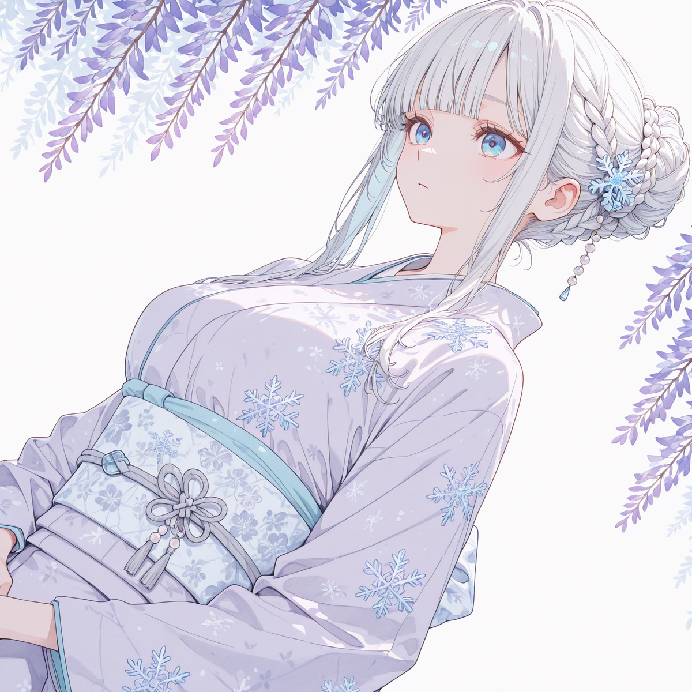
선데렐루
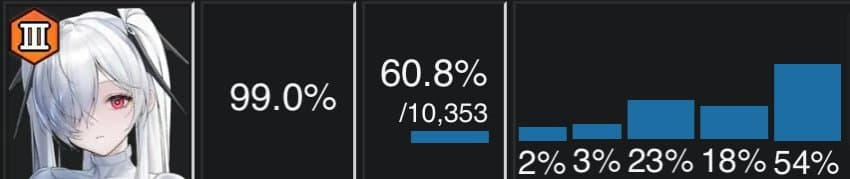
시즌1-10 선데렐루의 지표
승률 60프로라는 놀라운 수치를 보이며
자신이 왜 인류의 학살자인지를 증명했다
같은 시기 헬름이 54프로, 자칼이 59프로라고 하면
얼마나 높은 수치인지 감이 올 것이다
B급 일섬(순차공격)을 가지고도
방어형 수저를 물고 태어나서 말그대로
아레나를 도륙냈다
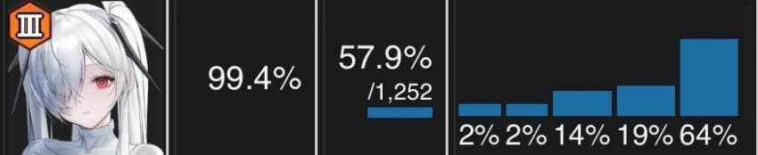
시즌 10도 승률 57.9로 마감한 선데에게
그날도 분명 평소와 같은 맑은 날이였다
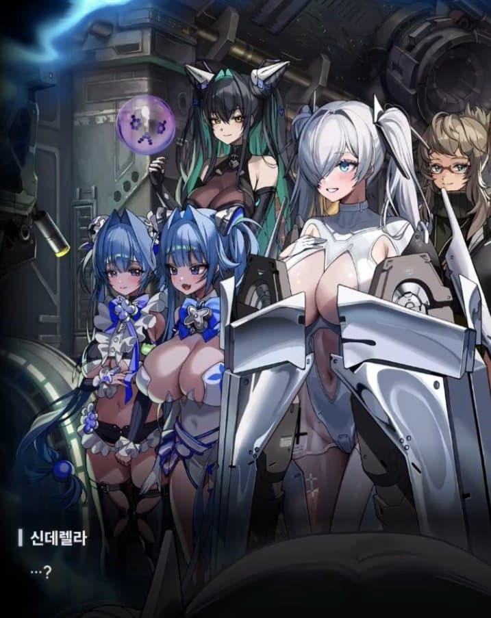
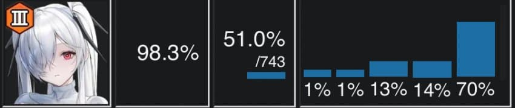
시즌11 하루 아침에 승률 6.9프로가 운지했다
도대체 무슨 일이 있었던삣?
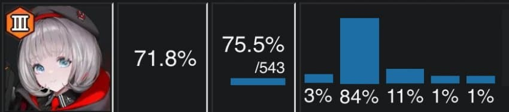
데뷔 승률 75.5프로라는
역대급 괴물 신인의 등장과 함께 선데는 나락으로 떨어진다
이 퓨어 임팩트 당시
같은 아레나의 쌍두마차로 불리던 홍련도
나란히 7퍼센트 정도 운지했지만
홍련은 직전 시즌에 다른 사건이 있었으니
그건 이후에 따로 설명하겠다
시즌11-24 지표
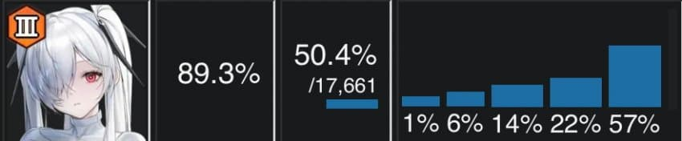
직전 시즌 지표
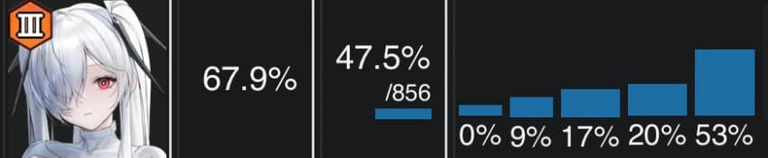
선데의 단점이였던
즉발이 아닌 B급 일섬과 절망적인 버충이
순식간에 수면위로 드러나며
선데의 추락은 현재진행형이다
방어형 수저를 활용하기 위한 비스킷은
목베비스 메타에서 신데에게 돌아올 일은 없어보인다
그렇다 찬란했던 선데 영광의 시절은
사실 이 천하의 사기캐이자 지옥의 파수견이
다하고 있던 것이였다
방어형 일섬이라는 특수성 때문에
언젠가는 돌아올 수도? 있지만
현시점에서는 기약이 없어보인다
홍련
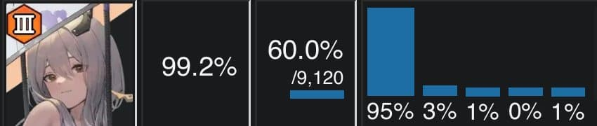
시즌1-9 홍련의 지표
지금의 모욕과 멸시가 무색하게도
픽률 99.2프로 승률 60프로라는
압도적인 지표를 보이며
아레나 = 홍부기 라고 해도 과언이 아니였다
이정도 픽률에 이정도 승률은 현재 베스티도 못낸다
시즌 9
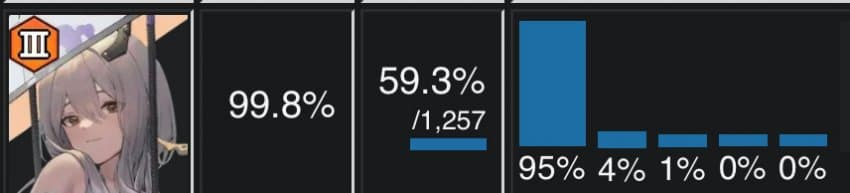
시즌 10
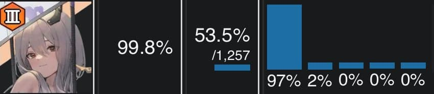
하루 아침에 승률 5.7프로가 증발했다
“아니 퓨어 임팩트는 시즌 11 아니였음?”
“ㅇㅇ”
시즌 11
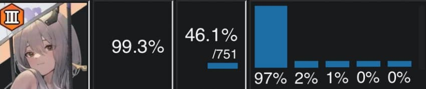
퓨어 임팩트는 또 따로 쳐맞고 7.4프로 운지함
베스티 재앙은 그렇다치고
시즌 10에 무슨 일이 있었던걸까
시즌 9
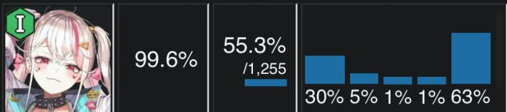
시즌 10
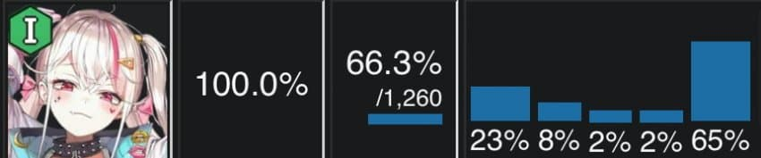
바로 자칼 버충 이벤트가 있었다
자칼의 버충이 버그로 인해 2배로 적용됐는데
이 버그의 수혜로 자칼 노아 조합이
2RL로 작동하면서 승률 68.5프로를 기록한다
모든 홍북이의 일섬이 노아에게 흡수당해버렸다는 것
이후 자칼 버그는 두시즌간 픽스되지 않고 계속되는데
왜 이딴 컨텐츠의 베타가
시즌 26까지 이어지고 있는지 이해할 수 있다
재밌는건 자칼 버그가 수정되고도
자칼은 홍련에게 돌아오지 않는다
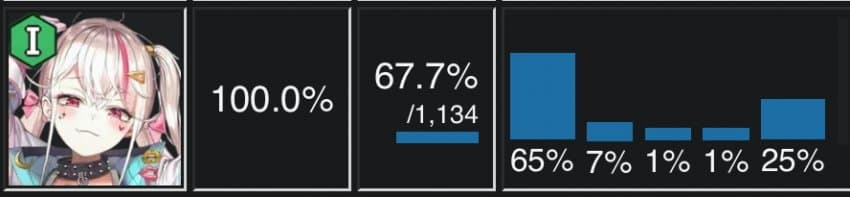
의외로 집 나가보니
홍북이 아래 있을때보다 더 승률이 잘 나온다
이때부터 자칼의 모든 지표는
홍북이 뒤를 봐주던 5번에서 1번 자리로 쏠리는데
자블 엔진이 마침내
세상에 모습을 드러낸것이다
그럼에도 선데와 다르게 홍북이는 살아남았다
“즉발 일섬” 이라는 A급 버스트를 가진 덕분에
오히려 너무 우수한 스킬셋 덕분에
자칼을 보내주고
알뜰살뜰 덱을 꾸려 운용하는 메타가 됐는데..
다음화 : 홍북이의 죽음
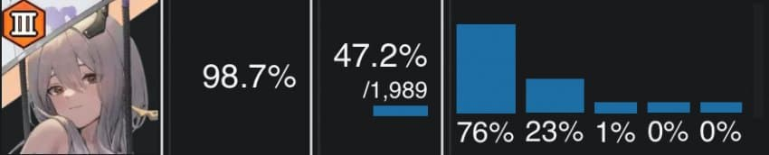
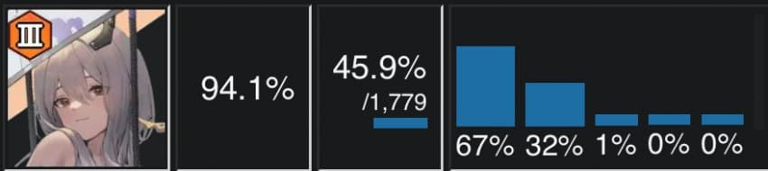
레이블의 출시 직후, 승률이 45.9로 떨어지고
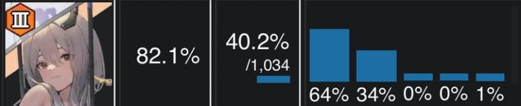
직전 시즌 40.2를 찍으며
역사의 뒤안길로 사라지고 있는 중이다
사실 레이블의 영향보다는
vs베스티를 위해 버티는 메타가 되며
일섬계가 죽어버린 영향을 크게 받았다
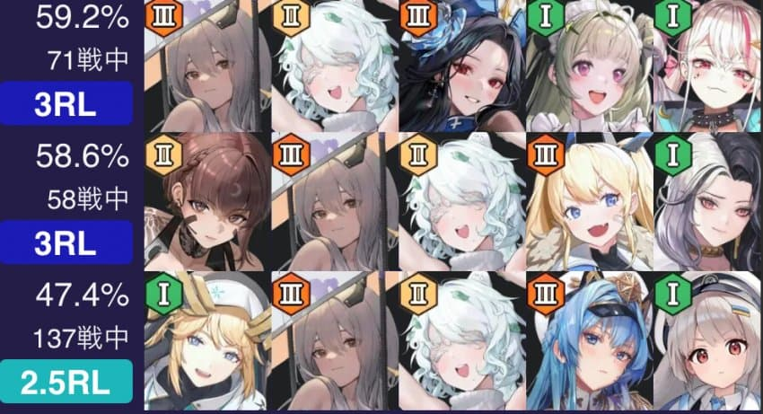
재밌는 사실은 전체 지표와 다르게
덱 승률은 높은 편이라는 것이다
아직도 홍북이를 과거의 덱 구성으로 쓰는 사람이 많고
이것이 홍북이의 전체 지표 하락으로 이어졌기 때문인데
홍북이가 잘못한게 아니라
활용을 못하고 있는 도령들의 잘못이다
과거의 홍북덱은 더이상 쓰지 않는다는게
세간에 퍼질때까지 홍북이의 수난시대는 계속된다
홍트레센자 좀 그만 쓰라고!!!!
베스티
시즌 11
출시와 동시에 데뷔 승률 75.5를 찍으며
베스티 전설이 시작된다
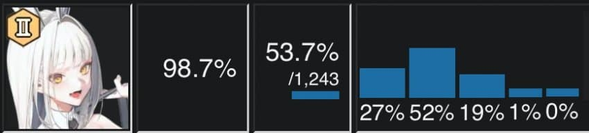
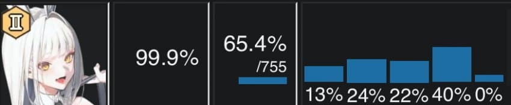
퓨어 임팩트 최대 수혜자인 블랑의 지표를 보면
한 시즌만에 승률이 11.7프로 증가하며
자블베 시대가 열린걸 볼 수 있다
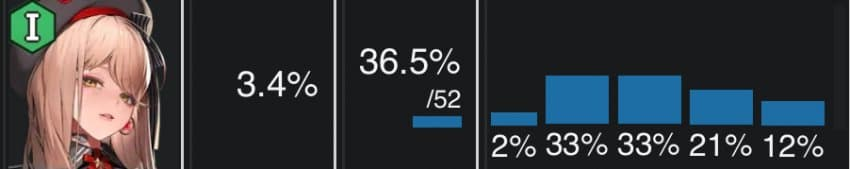
앱솔은 출시 후 3시즌이 지난
시즌 14부터 모습을 드러낸다
첫 등장 당시에는 30퍼대의 저조한 승률이였지만
마스트 육성이 끝나 지표에 들어오기 시작한
시즌 18부터는 승률이 계속 상승하여
45퍼 언저리까지 상승한다
시즌 18
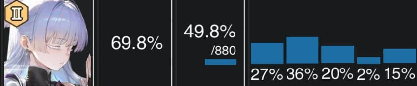
처음으로 베스티의 승률에
유의미한 영향을 미치는 덱이 나오는데
시즌 16에 출시한 나유타가 되시겠다
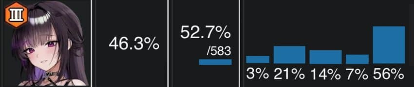
같은 시기에 미하라의 픽률이 2배 이상 증가하는데
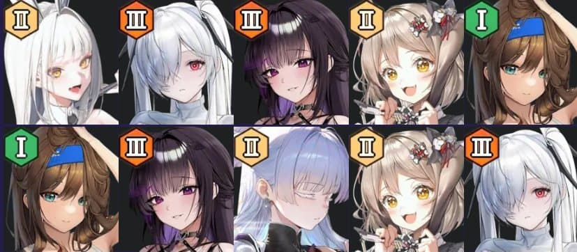
베스티를 막기위해
루블비, 루나비 조합의 사용률이 메이저로 올라오며
나유타 샷건도 2시즌만에 정형화된다
자칼 카운터인 로산나와 누아르
스토퍼 역할의 나유타
샷건의 무지막지한 오프닝 딜로
자블베, 앱솔 양쪽 상대로 좋은 지표를 보이고
그외의 전투에서도 좋은 모습을 보이며
58프로라는 높은 덱 승률을 찍는다
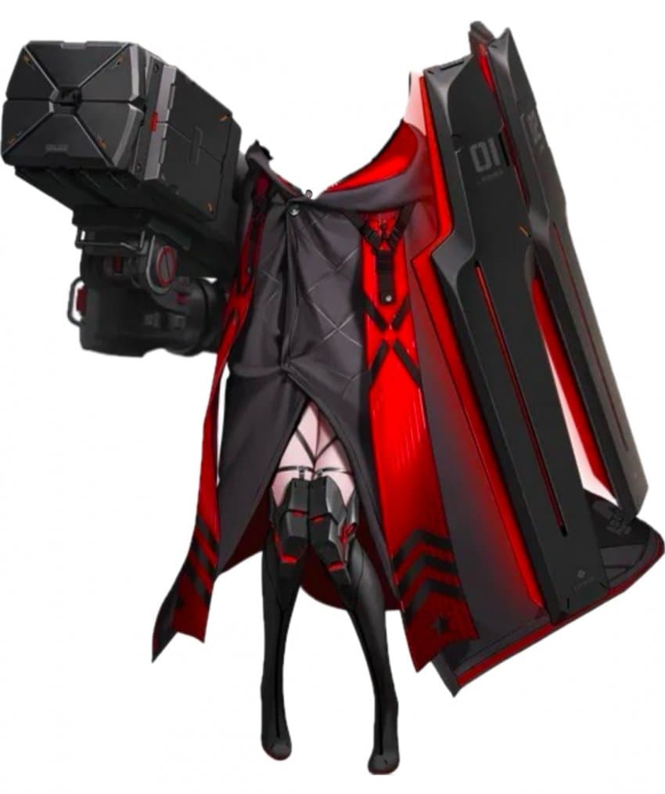
하지만 이러한 노력에도
베스티의 승률을 고작 1-2퍼 남짓
깎아내리는데 불과했는데..
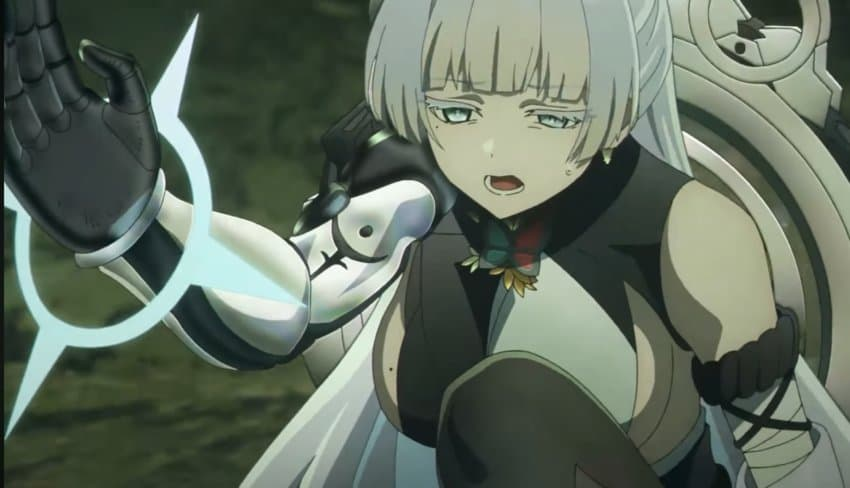
이 초딩이 공책에 써갈긴듯한 괴물에
상처라도 냈다는 거에 나유타는 자부심을 가져도 된다
“대체 시발 그 안에 있는게 누구요”
드디어 시즌 20
베스티의 독주를 막아내는 니케가 출시한다
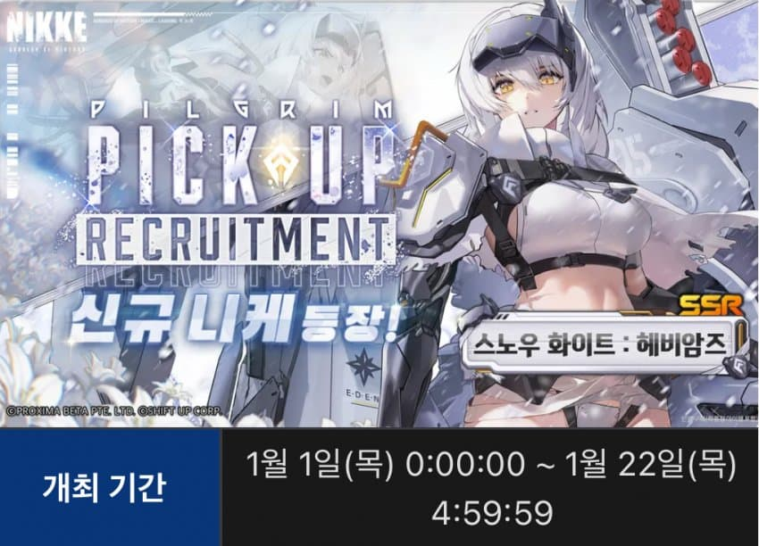
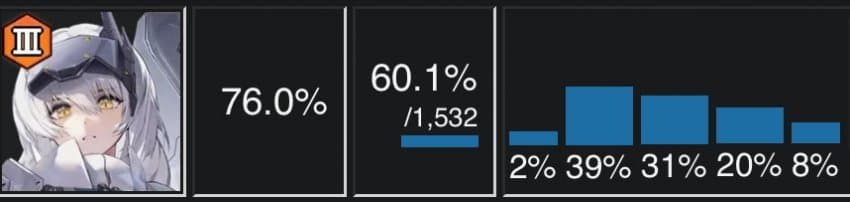
출시와 동시에 베스티의 승률을 3프로 깎아내리는데
자블 엔진에 들어갈 딜러 자리를 독식하고 있던
베스티를 밀어낸다
정확히는 각설이가 베스티를 죽였다기보다는
각설 >> 자블 엔진에 어울림
자블베가 해체되어 베스티가 다른 조합을 선택함
노이즈, 앱솔 등으로 분산된 베스티의 승률이 떨어짐
베스티가 너무 우수한 나머지
베스티의 파츠를 떼어내기 시작했는데
오히려 승률이 떨어지는 아이러니한 일이 벌어진다
시즌 22 최고 사용률을 찍은 앱솔이지만
이미 메타가 앱솔에 대한 대응 준비를 끝마쳤고
시즌 22
목베비스와 나유레후가 그 모습을 드러내
앱솔을 문자 그대로 개박살내버리며
시즌 23부터 앱솔의 사용률이 수직하락한다
그리고 현재에 이르러
결국 베스티는 자블베로 돌아오게 된다
“아니 시발 제 앱솔이 병신이 된건가요?”
“아니 시대의 이름이 앱솔인거삣”
현재 메타는 vs불굴은 어쩔 수 없이 버리고
“앱솔을 버틸 수 있는가?” 를 기준으로 하기 때문에
모든 덱의 품질 검사가 vs앱솔 기준으로 측정된다
이전만큼의 일방적인 폭력은 불가능해지고
정상 덱 범주로 들어왔을 뿐이다
불굴덱의 딜러로 아인이나 웡이 연구되는 지금
앱솔은 리소스 절약 << 쪽으로 경쟁력을 가지고 있다
문제는 앱솔은 아레나에서 보기힘든
“육성 상태 영향을 많이 받는 덱이다”
시대가 앱솔에 대한 저항력을 갖춘 만큼
아직 키우지 않은 니붕이들은 잘 생각해보고 키우자
성장 재화는 한정되어 있으니까
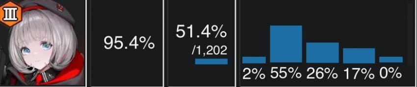
직전 시즌 승률 51.4프로를 찍으며
인간의 탈을 쓰고있지만
이러한 메타의 흐름이 반영됐을 뿐이라
실질 승률과 괴리감이 크다
항상 이 곰을 주의하자
다음화에 계속